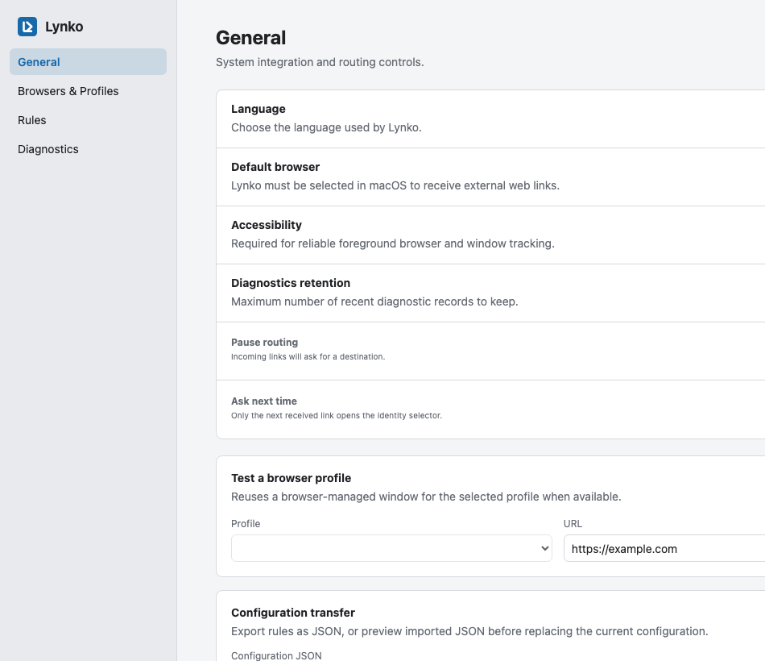

Specific, ordered rules
Preview matches before relying on them, then reorder and export your configuration.
Browser identity router
One link. The right browser profile.
Route external links by source application and domain, keeping work, personal, and client sessions in the browser identity where they belong.
Control without context switching
Set Link Helm as the default browser, define precise rules, preview routing decisions, and keep sensitive URL paths out of diagnostics.

Routing pipeline
Link Helm evaluates only the context needed to make a routing decision.
Mail, chat, calendar, or any app opening a web link.
Match by source Bundle ID and domain without retaining full URLs.
Choose a specified, active, global, or prompted destination.
Open the link in the browser-managed identity that fits the context.
Built for repeat use
Preview matches before relying on them, then reorder and export your configuration.
Diagnostics retain domains and stable identifiers, not paths, query values, or fragments.
Ask, reuse an active profile, open a target profile, or fail explicitly when a destination is unavailable.
Current support
Link Helm is early software. The table distinguishes verified behavior from adapter-level work and future plans.
| Platform | Browser | Status |
|---|---|---|
| macOS 13+ | Google Chrome | Validated |
| macOS 13+ | Microsoft Edge, Brave, Firefox | Adapter-level support; not fully validated |
| Windows / Linux | All browsers | Planned |
Source build
Create an application bundle or architecture-specific DMG directly from the source.